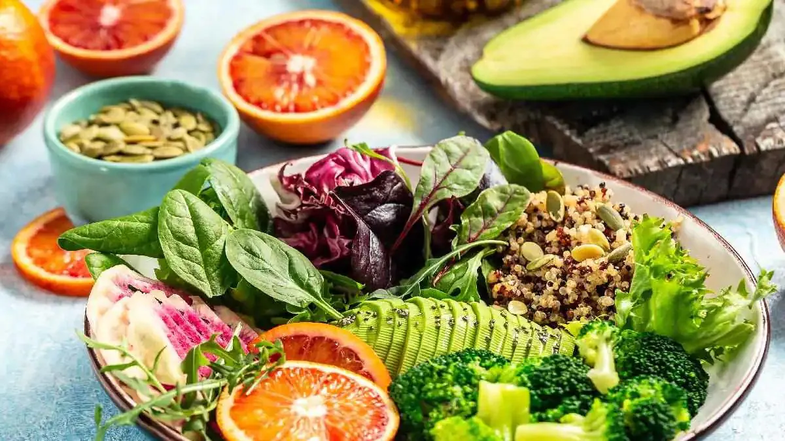

Dietary Tips for Mental Health

Eat a Balanced Diet
A balanced diet is crucial for maintaining good mental health. It provides your brain with necessary nutrients to function optimally and helps regulate mood.
- Include a variety of fruits and vegetables
- Incorporate whole grains for sustained energy
- Choose lean proteins to support neurotransmitter production
- Include healthy fats for brain health
- Aim for at least 5 portions of fruits and vegetables daily
Limit Processed Foods
Processed foods can negatively impact your mental health by causing inflammation and rapid blood sugar fluctuations.
- Replace sugary snacks with fresh fruits or nuts
- Choose whole grain options instead of refined carbohydrates
- Read food labels carefully
- Prepare meals at home using whole ingredients
- When eating out, opt for restaurants that use fresh ingredients
Stay Hydrated
Proper hydration is essential for mental clarity, mood regulation, and overall brain function.
- Aim to drink at least 8 glasses of water daily
- Keep a reusable water bottle with you
- Eat water-rich foods like cucumbers and watermelon
- Limit caffeine and alcohol consumption
- Monitor your urine color for hydration levels

Practice Mindful Eating
Mindful eating can improve your relationship with food and enhance overall mental well-being.
- Eat slowly and without distractions
- Listen to your body's hunger and fullness cues
- Avoid eating in front of screens
- Take deep breaths before eating
- Chew your food thoroughly
Maintain Regular Meal Times
Eating regular, balanced meals helps stabilize blood sugar levels and mood.
- Aim for 3 main meals and 2-3 small snacks daily
- Eat at consistent times each day
- Don't skip meals, especially breakfast
- Plan your meals in advance
- Include a balance of protein, carbs, and healthy fats in each meal

Consume Omega-3 Fatty Acids
Omega-3 fatty acids are essential for brain health and can help improve mood and cognitive function.
- Eat fatty fish like salmon, mackerel, and sardines
- Include plant-based sources like flaxseeds, chia seeds, and walnuts
- Consider taking a high-quality fish oil supplement